Free
computer Tutorials
|
Free
computer Tutorials
|
|
 HOME HOME
|
|
||||
Microsoft Excel 2007 to 2010The Format Chart PanelIn the previous lesson, you saw how to use the Layout panels to change the layout of the chart itself. The Format panels allow you to create some great looking charts with just a few mouse clicks.
Click on your chart to select it, and then click the Format menu at the top of the Excel Ribbon. You should see this long menu, split in two here: 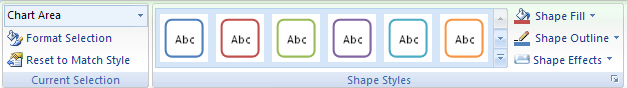 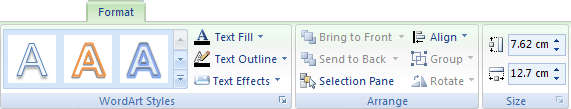 Using the various Format Panels on the Excel Ribbon, we'll format our chart from this: 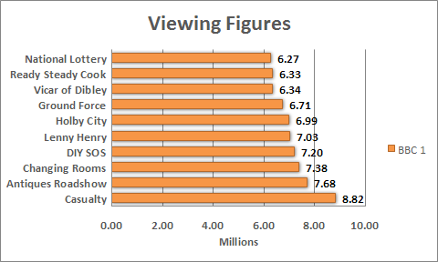 To this: 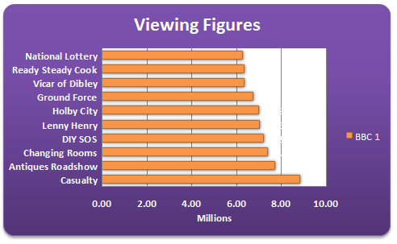 OK, it may look a bit gaudy! But at least it's lively. You can create a chart like this quite easily:
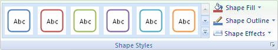 Click the down arrow on the right of the panel to see the available styles: 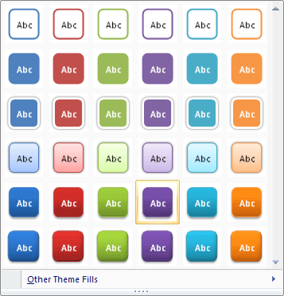 When you move your mouse over a style, your chart will change automatically. But you won't be able to see the full effect until you click away from the chart. We went for Style 28, the one that's highlighted in the image above. You get the rounded corners, the drop shadow and the colour fill.
Create your own Chart Style in ExcelYou can create all that yourself, though. If you want to create your
own style, try the following: Fill your chart with a colour by clicking the down arrow on Shape Fill on the Shape Styles panel: 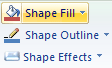 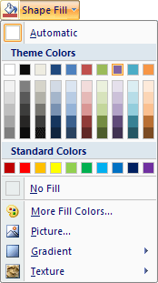 Select a colour from the list. Or click "More Fill Colors". Once your chart has a colour, you can liven it up a bit. Still on the same menu, click on Gradient. The sub menu appears: 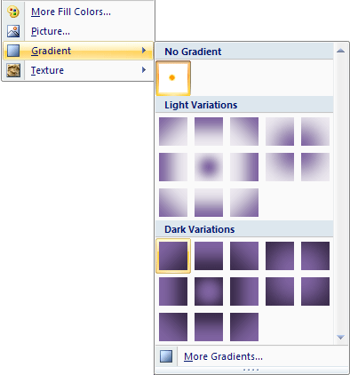 We went for one of the Dark Variations. Next, you can spruce up the text on your chart. Locate the WordArt
Styles panel: 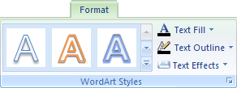 Click the Text Fill button to see the available colours: 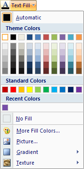 Once you have the chart background and text formatted the way you want it, you can add some rounded corners, and a bit of drop shadow. You can apply both of those from the Format Chart Area dialogue box. Here's how. To bring up the Format Chart Area dialogue box, click the Format
Selection button on the Current Selection panel: 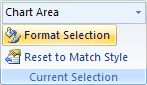 You'll then see the following dialogue box appear: 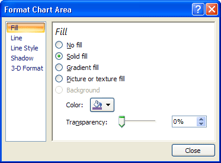 To get rounded corners, click on Line in Excel 2007. You'll then see the following options: 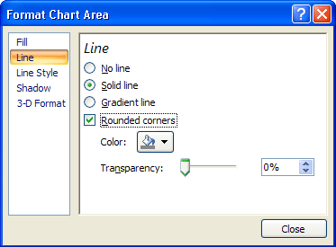 In Excel 2010, you'll have a Border Styles menu on the left. Click that to see the Rounded Corners option. Put a tick in the box for Rounded Corners. Then click Shadow, on the left. The options will change to these: 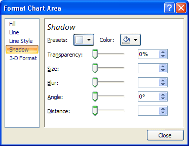 Click the Presets button to see a list of pre-made shadows: 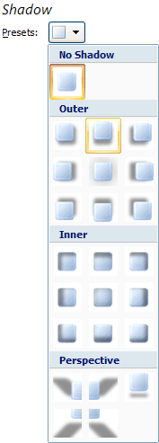 Select the one you like. Then click Close on the dialogue box. Your chart will then have rounded corners and a drop shadow. OK, you should now a very smart chart. Playing around with the various options on the Format Chart Area dialogue box can really bring an Excel chart to life!
Next up, we'll have a go at pie charts: |
|||||
|